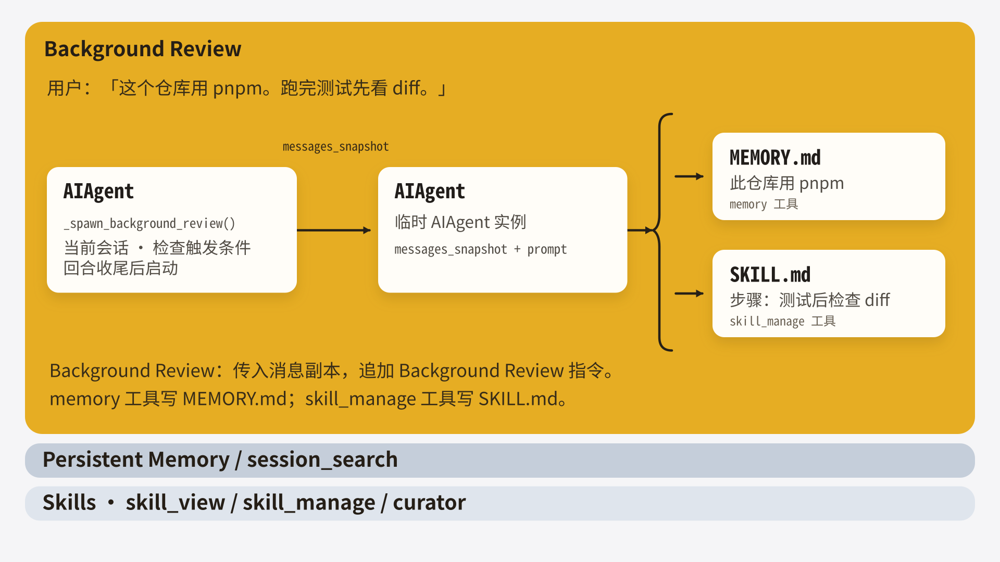
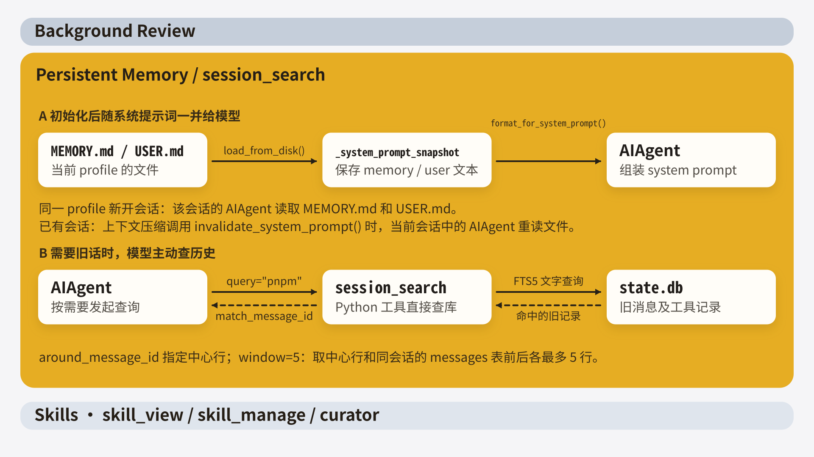
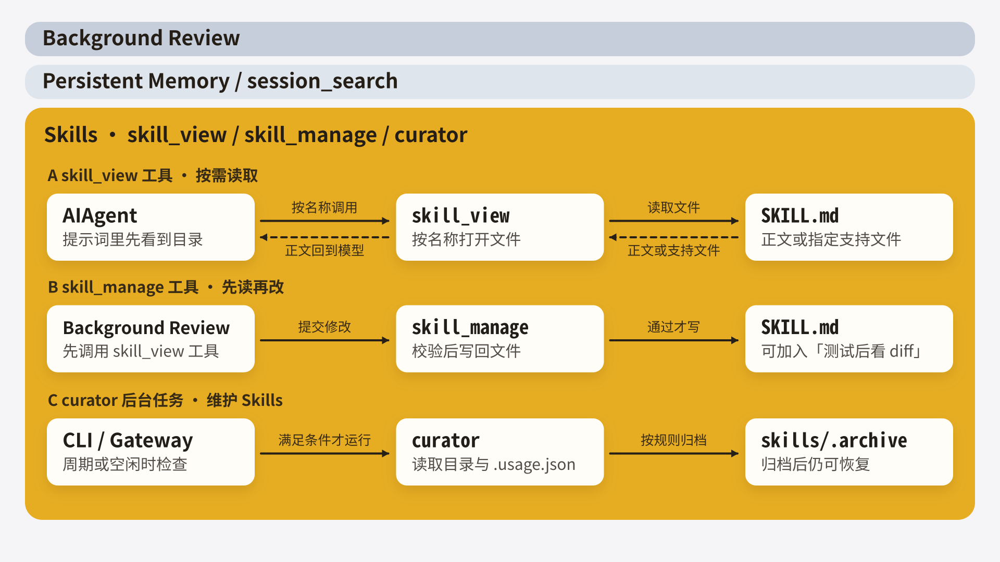
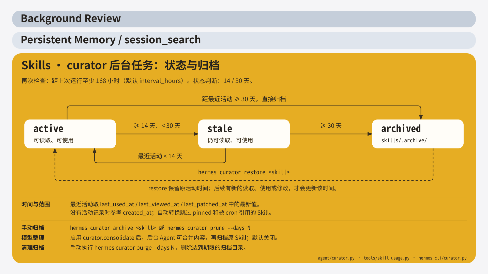

TL;DR：Hermes 的 10 个记忆问题
关键区别： memory 工具修改 MEMORY.md 和 USER.md，session_search 工具查找历史消息，Skill 保存可复用的做法。下面以 Hermes Agent v0.22.5 的源码为准。
- 何时触发？ 当前会话的模型可主动调用
memory或skill_manage工具；Background Review 默认每 10 个用户轮检查记忆、每 10 次准备模型请求检查 Skill。 - 谁来处理？ 当前会话中的 Agent 可直接写；后台另建临时
AIAgent，相同文字只追加一次。 - 看哪些消息？ 默认用当前会话仍保留的消息；为后台另选服务商或模型后，才摘要较早的消息。
- 什么值得存？
USER.md记用户信息，MEMORY.md记环境与项目约定，Skill 记可复用做法。 - Prompt 怎么写？ 记忆 Prompt 指定保存位置；Skill Prompt 要求提炼技巧和纠正。
- 文件怎么组织？
MEMORY.md和USER.md遇到独占一行的§就分开，每段算一个entry；Skill 以SKILL.md为入口。 - 怎么更新？
memory工具用action="patch"改文字；skill_manage工具改 Skill。 - 什么时候审批？ 后台改删记忆先让用户批准；Skill 由
skills.write_approval控制。 - 谁共享？ 同一 profile 共用记忆文件；Skill 还可从受信任项目目录读取。
- 何时读到？ 新开会话时，新的
AIAgent读取文件；已有会话在调用invalidate_system_prompt()时重读。
1. Background Review 与 memory 工具
memory 工具：模型怎样改 MEMORY.md 或 USER.md
memory 工具用 target 选要修改的文件，一次调用只改一个。memory 工具的注册与参数入口 · target 对应的文件
-
target="memory"：MEMORY.md。 -
target="user"：USER.md。
当前会话何时保存
-
「以后默认用 TypeScript」：当前会话中的 Agent 可以当场写进
USER.md。 -
「这次用 TypeScript」：只约束当前任务。
当前会话怎样主动保存 Memory
- 不必等用户说“记住”。 当前会话的模型可以依据 system prompt 和
memory工具说明，判断遇到的事实是否值得保存，再调用工具。例如用户介绍自己的长期职责，模型可将事实写入USER.md；是否调用由模型判断，写入仍遵循审批设置。memory工具的 WHEN / SKIP - 提示从哪里来？
_tool_guidance_block()在memory工具可用时调用build_memory_guidance()，生成与已启用文件对应的提示；两种内置存储都关闭时返回空字符串，只启用用户资料时只引导写target="user"。这段指导经_guidance_parts()放进 system prompt 的stable部分。工具与开关条件 · 按存储生成指导 · 组装到 stable - 什么适合主动记？
build_memory_guidance()把具体任务的方法、踩坑，以及用户对这类任务的偏好和纠正优先交给 Skill；Memory 保存跨任务仍适用的用户事实、稳定环境事实和长期约定。写成事实陈述，例如“用户偏好简短回答”，而不是给未来模型下命令。预计一周内就会过时的事实留在会话历史。Memory 与 Skill 的分工
空闲、关闭会话时发生什么
内置 Memory 的 Background Review 在回合收尾检查计数和完成条件。使用本地模型的延后队列时，空闲后执行的是此前已经排队的任务；队列为空就没有任务可取。单纯停止发消息或关闭会话，不会凭这个动作新建一次默认 Background Review。回合收尾条件 · 只取已排队任务
配置了外部 memory provider 时，还有单独的生命周期：完成且未中断的回合可通过 sync_all() 同步；真正结束会话时，shutdown_memory_provider() 调用 on_session_end(messages)；切换会话 ID 时，commit_memory_session() 也可调用这个接口。具体是否抽取、保存什么由 provider 实现决定。回合同步 · 会话结束与切换 · provider 接口
Background Review 的自动触发条件。 默认累计 10 个用户轮检查记忆，或累计 10 次准备模型请求检查 Skill。任一计数达标后，程序等当前回合生成最终答复；回合未中断、自动检查也未被禁用，才安排后台任务。本轮是否已写过记忆不参与这个判断。记忆计数 · 收尾时检查 Skill 计数并调度
memory 工具参数 用 memory 工具的 action="add" 新增 entry，把要保存的文字传给 content。下面是模型要记录「这个仓库用 pnpm」时发出的工具参数示例。action / target / content 定义
相同文字的处理。 MemoryStore.add() 去掉 content 首尾空白，再比对目标文件里的 entries。已有「用 pnpm 装依赖」就跳过这段完全相同的文字；「安装依赖用 pnpm」会按新 entry 处理。源码
memory 工具的更新操作
-
改一段：
action="patch"用old_text找原文，用content替换。比如把「这个仓库用 npm；改动后先跑测试」里的前半句换成 pnpm，测试要求保留。 -
删整段：
action="remove"用old_text找到并删除整个entry。匹配到多个不同的entries时返回ambiguous。patch、remove 与匹配失败 · 拒绝 replace
MemoryStore._mutate() 怎样写文件
-
加锁后重读目标文件，再检查文本匹配和字符数。加锁、重读、写入
-
用
operations可把多项改动放在一起，按修改后的总长度检查。例如先删旧entry再新增，整组通过才更新目标文件。operations 参数 -
程序先写临时文件，再用它替换原文件。原子写入
memory 工具返回什么
-
已更新： 返回
success、done、target、usage和entry_count。用action="patch"时还返回patched_entry_before、patched_entry_after。成功返回字段 -
待审批： 后台 Agent 提交
action="patch"或action="remove"时，工具返回staged: true和pending_id。用户批准后，Hermes 核对原entry再修改。后台审批返回字段
批准命令
-
记忆：
/memory pending查看，/memory approve <id>应用。开启memory.write_approval后，新增也要批准。记忆审批 -
Skill：
skill_manage工具默认校验通过后直接写。开启skills.write_approval后，用/skills diff <id>查看差异、/skills approve <id>应用。Skill 审批
这条工具结果只回给调用它的模型。写好文件不会立即刷新当前会话的 system prompt；下一节说明何时重读。要查用户上次原话或那次命令输出，用 session_search 工具查 state.db。Session Search

Background Review 用两套计数
-
记忆：
memory.nudge_interval默认 10 个用户轮。每来一条新用户消息，若计数启用且memory工具和存储可用，_tick_memory_nudge()把_turns_since_memory加 1。记忆计数源码 -
Skill：
prepare_iteration()每准备一次模型请求，若计数启用且skill_manage工具可用，_iters_since_skill加 1。这个步骤可调用多个工具，也可以不调工具。Skill 计数源码
记忆：用户轮计数加 1，到阈值时返回 True。
Skill：准备一次模型请求，内部步骤计数加 1。 此处只加计数，收尾时才检查阈值。
例如，你只说了一次「修好测试」。 模型先让 Agent 读两个文件，算 1 步；拿到文件内容后，模型决定运行测试，再算 1 步；看到测试结果后，模型直接给最终答复，即使没调工具也算 1 步。这次是 1 个用户轮、3 个 Agent 内部步骤。
程序在回合收尾时安排 Background Review
-
计数：
skills.creation_nudge_interval默认 10 个内部步骤。假设已有 8 步，本轮第 2 步到阈值，Agent 仍先做完第 3 步。默认值源码 -
收尾条件： 有最终答复、回合未中断、宿主未跳过。记忆和 Skill 同时到阈值时，合成一次 Background Review。收尾检查源码
-
开关：
auxiliary.background_review.enabled控制自动启动。程序在收尾时检查，无需等待聊天平台确认送达。调度源码
Background Review 怎样启动
消息副本和后台线程
-
复制： 回合收尾调用
_spawn_background_review()；_clone_background_review_messages()复制消息，也复制内层的工具调用和内容。收尾传入 messages · 复制与调度 -
排队：
auxiliary.background_review.defer: auto且使用 Hermes 托管的本地llama-server时，任务等所在进程没有正在处理的聊天回合、且本地模型空闲。等到defer_max_age_s（默认 30 分钟）也可被取出。队列等待与超时 · 取出条件 -
执行：
bg-review后台线程运行任务。启动后台线程
build_cache_parity_fork() 在线程里新建一个临时 AIAgent。 它沿用当前会话的 session_id，关闭自身的会话持久化，也不接会话数据库。用户的会话列表里仍是原对话；这个 AIAgent 实例只运行一次后台任务。它可以通过 memory 工具和 skill_manage 工具提交修改，哪些改动要等批准见第 8 问。实例创建与持久化隔离
Background Review 读取哪些历史消息
默认没有固定条数。 messages_snapshot 是当前会话回合收尾时仍保留的消息副本，里面有多少条就交多少条，包含仍保留的工具调用和结果。已经被压缩掉的原消息不会从数据库补读。
-
默认用当前会话的服务商和模型（
_routed=False）。 Hermes 把整份messages_snapshot交给conversation_history，沿用当前会话请求的缓存前缀。 -
也可以为 Background Review 单独指定服务商和模型。 在
auxiliary.background_review下填provider和model，例如官方配置示例里的provider: openrouter和model: google/gemini-3-flash-preview。两项的组合和当前会话所用的不同、且配置能解析时，_routed=True。这次请求不能沿用当前会话的模型缓存，Hermes 就用_digest_history()减少重新发送的内容：从最近 24 条消息开始保留原文，把更早的消息拼成一条摘要。未填写、选了同一组，或配置解析失败，都用当前会话的服务商和模型。选择后台模型的代码
两种分支都另外传一条 Background Review 指令 user_message。24 指 Background Review 切换服务商或模型后，开始保留近期原消息的条数。 分支与两个入参
GitHub 源码：run_conversation 的两个入参
切换到单独配置的服务商或模型后，_digest_history() 怎么处理历史？ 默认从末尾取 24 条，工具结果也算一条。保留区间不能以 role="tool" 开头，所以切口遇到工具结果就向前移；总数不超过 24 条则原样保留。前面被折叠的消息由 Python 拼成一条 role="user" 摘要：每条旧用户文字最多 300 字符，每条旧助手文字最多 200 字符；旧工具只留名称，不留参数和输出。窗口和拼接源码
Background Review 默认可调用的工具
后台执行名单
-
默认工具：
skills_list工具列目录，skill_view工具读正文，skill_manage工具提交 Skill 变更；read_file工具读文件，search_files工具查找文件。skills 工具集定义 -
什么时候加入
memory工具：review_memory=True，且启用了MEMORY.md或USER.md对应的记忆功能。只达到 Skill 阈值时，后台 Agent 默认使用skill_manage工具更新 Skill。memory 工具集定义 · 实际白名单条件
工具定义与执行权限
-
模型请求： 沿用当前会话的模型时，后台复制该会话的工具定义，以复用提示词缓存。复制当前会话的工具定义
-
实际执行： 后台按自己的名单放行工具。默认会拒绝
terminal、write_file和patch；auxiliary.background_review.extra_tools只能追加已有的工具。额外工具配置 -
后台修改记忆：
memory工具收到action="patch"或action="remove"后，先交给用户审批。写入校验
Background Review 的提示词。 _MEMORY_REVIEW_PROMPT 按 _MEMORY_ROUTING_BLOCK 引导模型选文件：USER.md 写 who the user is，MEMORY.md 写 facts about the ENVIRONMENT you operate in。_SKILL_REVIEW_PROMPT 则检查能复用的技巧和纠正。比如用户多次退回 JavaScript 实现并给出 TypeScript 版本，模型可以把这归纳为这类任务的做法，写进对应 Skill。没有值得保存的经验时，可以输出 Nothing to save.。文件分工 · Skill 取材与写入顺序
2. Persistent Memory 与 Session Search

load_from_disk() 读取记忆文件
- 当前会话的
AIAgent初始化时，会读取完整的记忆文件。Hermes 读取MEMORY.md或USER.md，遇到独占一行的§就分开。分出来的每一段，算一个entry。读取文件与分段
例如，「这个仓库用 pnpm」和「提交前跑测试」之间放一行 §，读出来就是两个 entry。一段可以有多行，普通换行不会另算。
- 程序去掉首尾空白、跳过空内容，并保留相同
entry的第一次。安全扫描命中的entry在 system prompt 中显示为[BLOCKED: …]，文件原文保留。去重、扫描
_render_block() 生成记忆段
-
正文和标题： 用
§拼接处理后的entries，再加标题与字符用量。MEMORY.md对应MEMORY (your personal notes)，USER.md对应USER PROFILE (who the user is)。标题常量 · 生成提示词段落 -
例子： 「这个仓库用 pnpm」和「提交前跑测试」若都通过检查，system prompt 中就保留这两句。文件为空则省略这一段。
-
字数： 写入默认上限为
MEMORY.md2200 字符、USER.md1375 字符。手工将文件写超限时，加载会告警，并继续处理文件里的entries。
这两段生成好的文字才存进 _system_prompt_snapshot["memory"] 和 _system_prompt_snapshot["user"]。这两个字段保存内置 Markdown 文件生成的记忆段。设置 memory.provider 后，_memory_parts() 还可以追加外部记忆服务返回的文字。内置文件与外部 provider 的拼接
format_for_system_prompt() 只是从这两段里取出所需的那段文字；_memory_parts() 再把启用且非空的段落交给系统提示词组装。同一份系统提示词还包含身份、运行指引、项目指令、Skill 目录等其他部分。_system_prompt_snapshot 只存记忆文字，不存整份系统提示词。取记忆文字 · 把记忆拼入系统提示词
例子：从 npm 改成 pnpm。 当前会话中的 AIAgent 启动时，文件里写的是「用 npm」，所以系统提示词里的记忆段也是这句话。后来 Background Review 的后台 Agent 调用 memory 工具，把 MEMORY.md 改成「用 pnpm」。MEMORY.md 已经更新，但这次工具返回的结果只进后台的对话，不会追加到当前会话；当前会话 system prompt 里的记忆段因此仍可能是 npm。
当前会话何时看到 pnpm
-
工具结果： 当前会话中的 Agent 调用
memory工具时，该会话的模型马上收到工具返回的信息。 -
system prompt： 同一 profile 新开会话时，新的
AIAgent读取文件；已有会话在上下文压缩调用invalidate_system_prompt()时，由该会话的AIAgent调用load_from_disk()，再重新组装后续请求。memory 工具 · 压缩后的重读入口
先搜一句。 调用 session_search 工具并传 query="pnpm"，它用 SQLite FTS5 搜数据库中的文字。FTS5 是 SQLite 自带的全文索引扩展；这里用它匹配消息文本，不需要把消息转成向量，也不另叫模型写摘要。默认只搜索 user / assistant，显式传 role_filter="tool" 才按工具结果去搜。搜索返回 session_id、match_message_id 和命中片段。搜索结果和默认角色
再看命中前后：window=5 数的是 messages 表的行。 例如你只发了一条「找出 pnpm 版本」，库里可以有四行：① user 提问；② assistant 发出工具调用；③ tool 返回版本；④ assistant 给最终答复。这是 一个用户轮、四条消息。如果一次助手消息发出两个工具调用，助手那条仍算一行，两个工具返回分别占行。messages 表：role、tool_calls、tool_call_id
session_search 工具的两种读取方式
-
围绕命中行（
scroll）： 传session_id和around_message_id=match_message_id。默认window=5，取中心行、同会话前后各最多 5 行，最多 11 行。按数据库行顺序读取，可以带回工具结果。window 参数说明 · 按 id 取中心及前后行的 SQL -
查看会话（
read）： 只传session_id。会话超过 30 条消息时，默认返回最早 20 条和最近 10 条消息。read 的截断
3. Skills：读取、修改和维护
curator 是 Hermes 的 Skill 库维护任务。 它读取 Skill 的使用记录，把受管理且长期未用的 Skill 标为 stale，符合归档条件时移入 skills/.archive/，之后可以恢复。任务定义 · 状态更新与归档

Skill 是什么？ Hermes 官方叫 Skills System。一个 Skill 以 SKILL.md 为入口，写明特定任务可以怎么做，可附脚本、模板或参考资料。这里的例子就是：在验证 Skill 的 Procedure 里加一步「跑完测试先看 diff」。SKILL.md 格式与 Procedure 示例
Skill 的发现、读取和修改
-
发现：
SKILL.md文件头有name和description。系统提示词目录列load_name和description；前者是传给skill_view工具的name参数。标成[names only]的类别省去description。目录组装时取的字段 · names only 的渲染 · 目录生成 -
读取： 用
skill_view工具读正文；传file_path可读支持文件。正文与支持文件 -
修改： Background Review 先用
skill_view工具读取已有目标，再用skill_manage工具提交修改。后台权限
当前会话何时主动写 Skill
- 新建：
skill_manage工具可用时，系统提示词会加入SKILLS_GUIDANCE。模型整理出可复用的复杂流程时，可以在当前回合调用skill_manage工具保存，无需用户发起，也无需等 Background Review 的计数达标。复杂或反复试错的任务结束时，## Skills也提示模型可以提议保存成 Skill。系统提示词注入 ·SKILLS_GUIDANCE原文 - 更新： 当前会话通过
skill_view工具加载的 Skill 如果漏了步骤、命令有误，或需要补充新发现的注意事项，## Skills指示模型在回复前调用skill_manage工具修订。是否调用由当前会话的模型判断，写入仍遵循skills.write_approval。系统提示词里的## Skills - 回合之间： 使用 Hermes 托管的本地模型时，空闲队列启动的是回合结束时已安排的 Background Review。另有
curator维护已保存的 Skill；开启consolidate后，它根据候选 Skill 和使用数据做整合，不读取普通会话历史。空闲队列 · 整合输入 · 启动整合 Agent
curator 的运行间隔、归档和整合
-
启动： 调用
maybe_run_curator()时，interval_hours默认要求距上次运行至少 168 小时。调用方传idle_for_seconds时，另外检查min_idle_hours（默认 2 小时）。配置字段 · 启动检查 -
归档： 读取
.usage.json的活动时间；按stale_after_days（14 天）和archive_after_days（30 天）处理符合条件的 Skill。活动时间和归档规则 -
整合：
consolidate默认关闭。开启且有候选时，另起 Agent，先给候选及使用统计，再按需读正文。

4. 记忆与 Skill 的层级
记忆按 profile 保存；Skill 会按项目和 profile 找不同文件；委派角色本身不会创建一层记忆。 换目录、开新会话、切换 profile 是三个动作，结果不同。
Profile 的记忆文件与会话历史
HERMES_HOME 决定内置文件的位置
-
默认 profile 通常用
~/.hermes；reviewerprofile 通常用~/.hermes/profiles/reviewer。Profiles 与 workspace -
同一 profile 的会话共享
memories/MEMORY.md和memories/USER.md。路径按 profile 划分，不再按项目名、cwd、用户 ID 或角色名分文件。get_memory_dir() · _path_for(target) -
换工作目录只改变工作位置；换 profile 才换这两个文件。具名 profile 不会自动继承默认 profile 的记忆。
上次记的事实和上次的原话走两条路。 同 profile 下，新会话中的 AIAgent 用 load_from_disk() 读出本次启动时已经保存的事实。想找某次完整对话，session_search 工具默认查当前 profile 的 state.db；明确传 profile 时能只读打开另一 profile 的库。profile 划分默认存储，机器上的文件权限和工具授权另算。跨会话加载 · 显式跨 profile 的只读分支 · 默认 state.db
memory.provider 是可选扩展。远端服务怎么划分或共享数据，要看该 provider 的 bank、tenant 等实际配置；不能把它们算成 Hermes 内置文件的默认层级。Provider 接口与生命周期
Skill 的查找顺序与写入位置
get_skill_search_roots() 的查找顺序
-
项目：
TIER_PROJECT扫描最近 Git 根下的.hermes/skills/和.agents/skills/；项目要在skills.trusted_project_dirs。项目根与 trust -
其余三层： 当前 profile 的
$HERMES_HOME/skills（TIER_LOCAL），然后是skills.create_dir（TIER_CREATE_DIR），最后是skills.external_dirs（TIER_EXTERNAL）。预装 Skill 属于 profile 目录。四层查找顺序 -
同名例子： 项目和 profile 都有
test-guide时，受信项目中的skill_view工具优先读项目版；在没有该 Skill 的项目里，可以读到 profile 版。
skill_manage 工具写到哪里
-
新建： 默认写当前 profile；配置
skills.create_dir后写指定目录。新建位置 -
修改：
get_all_skills_dirs()使用include_project=False。读了项目版后，再用同名name提交修改，可能选中 profile 版的SKILL.md。外部目录是否可写取决于配置和权限。修改查找排除项目层 -
后台修改： Background Review 必须在本轮读过这次实际要修改的路径。按目标路径做写前检查
保存到 SKILL.md 的更新，可供后续会话读取。 例如这次把「测试后检查 diff」补进 test-guide/SKILL.md，下一个能发现该 Skill 的会话用 skill_view 工具打开文件时，就读到这一步；它不会随每次启动全文加载。profile 内运行的 curator 维护任务按 .usage.json 的活动记录维护可管理的 Skill，按规则标记 stale 或归档到 .archive/，项目版不会因为在目录里可见就被这条路径自动改写。按需读取 Skill · curator 生命周期
Agent 团队：角色、profile 和任务工作区各有用途
delegate_task 工具启动的子 Agent 有自己的会话
-
角色：
leaf/orchestrator决定能否继续委派。角色与工具 -
记忆和 Skill： 子 Agent 默认
skip_memory=True，委派工具表禁用memory工具。如果有 Skill 工具，仍按当前 profile 和目录找 Skill。委派不会给它另建reviewer/USER.md。子 Agent 构造 -
会话记录： 子会话和父会话可以保存在同一数据库，用
parent_session_id关联。子会话数据库
要让角色长期各有记忆，可分别用独立 profile。 例如给 coder 和 reviewer 各建一个 profile，并各自运行 Agent。同一 profile 开再多会话，也还是读写同一份 MEMORY.md 和 USER.md。可选的 profile_routes 也能给一次委派绑定另一个 profile 的环境和 Skill；这条路径仍是子 Agent，仍走上面的委派记忆限制。profile_routes · 切换委派运行范围